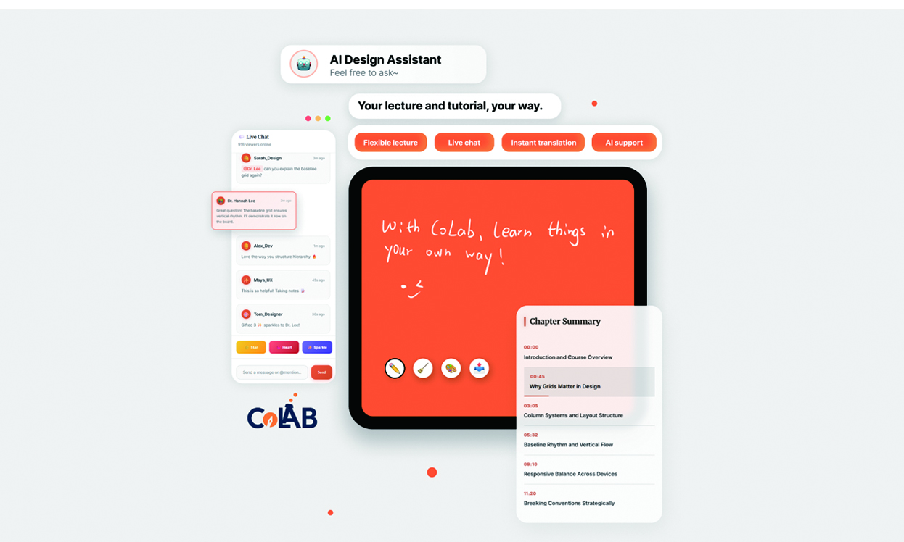

Find the right context
Course-based spaces connect lecture and tutorial activity. Content, questions and resources stay tied to the learning context where students need them.
From the lecture room
to working together.
A course-based learning and collaboration platform that connects lecture content, tutorial discussions and student teams in one place.

CoLab connects two parts of university life: understanding course material and finding people to work with. The product direction brings focused discussion, shared resources and team formation into a course context.
Course-based spaces connect lecture and tutorial activity. Content, questions and resources stay tied to the learning context where students need them.
Skill profiles and shared goals give students a starting point for finding compatible collaborators, with a more structured approach to group formation.
Discussion, resource sharing and lightweight project tracking connect the learning experience with the work a team needs to complete.